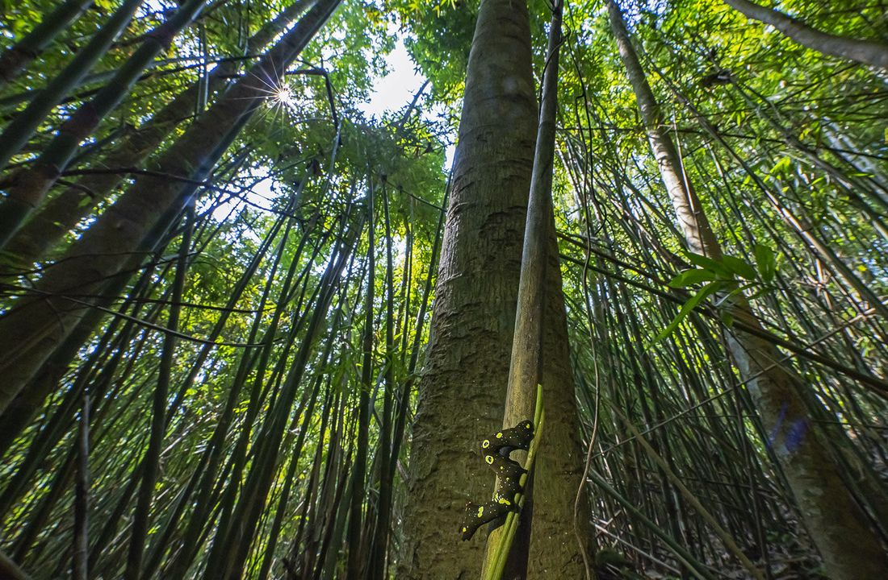
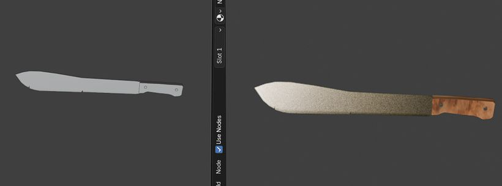
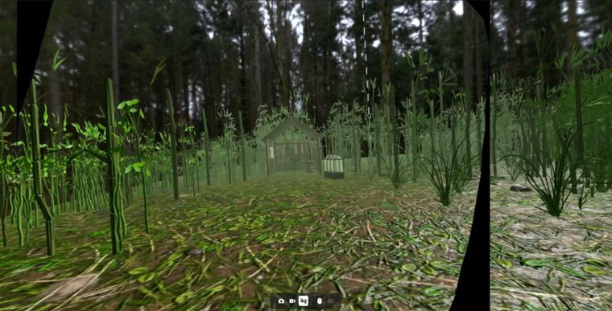
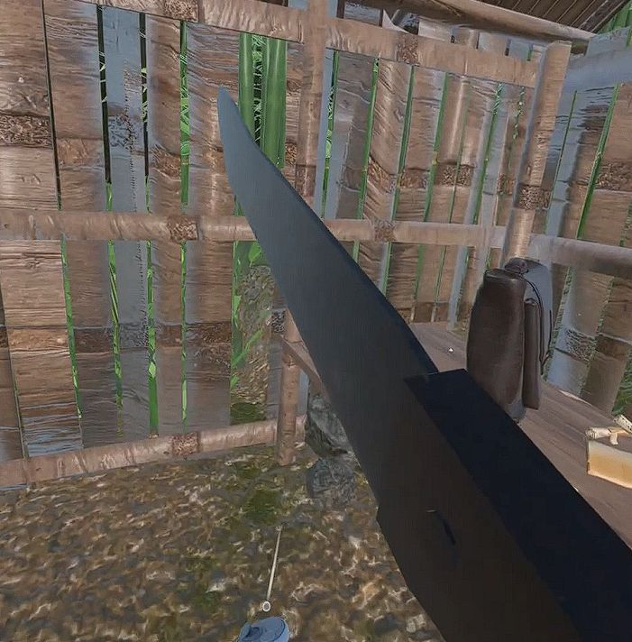
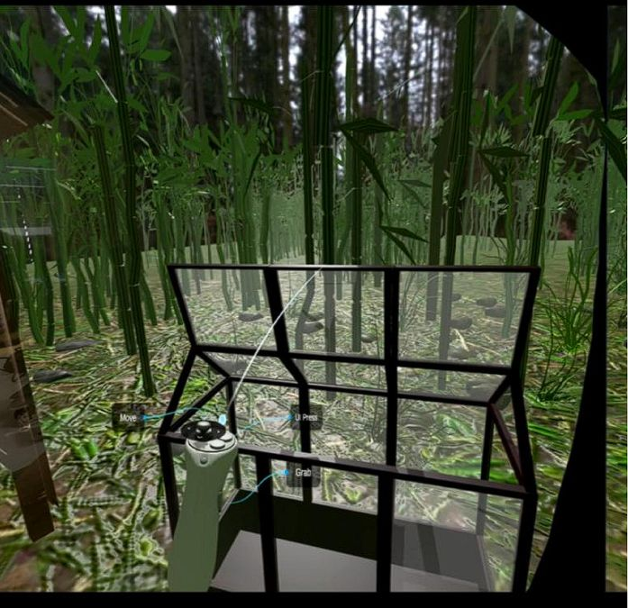

The context
The bamboo masting famine of 19th-century Mizoram.

VR simulation exploring the bamboo masting famine of 19th-century Mizoram, built in Unity and Blender.
The bamboo masting famine of 19th-century Mizoram.
A VR environment built in Blender and Unity.
Explore the forest and encounter botanical collection through embodied interactions.
Mautam is an immersive VR experience set in the bamboo forests of Mizoram in 1862, just before the flowering of Melocanna baccifera. This rare ecological event occurs once every 48–50 years, producing an abundance of bamboo seeds that trigger rat population explosions and eventually lead to widespread crop destruction and famine.
The user takes on the role of a colonial botanist commissioned to collect specimens of Melocanna baccifera for the Royal Botanic Gardens, Kew. Through interactions such as harvesting bamboo, preserving it in a Wardian case, and reading field notes, the player experiences the routine of nineteenth-century botanical exploration.
Rather than recreating a historical event as a spectacle, Mautam uses VR to immerse players in the material routines of colonial botanical exploration. Through physical interaction and environmental storytelling, the project invites reflection on ecology, extraction, and the unequal histories that shape how natural phenomena are remembered.
Environment and prop assets were modelled and textured in Blender — from the botanist's hut to the machete and field journal.



The assets were assembled into a playable VR scene in Unity — a dense bamboo forest, the botanist's hut interior, and the wider landscape the player explores.



Why These Interactions?
These interactions recreate the routine of a colonial botanist, allowing players to experience the process of botanical collection while reflecting on the relationship between scientific exploration and ecological history.


